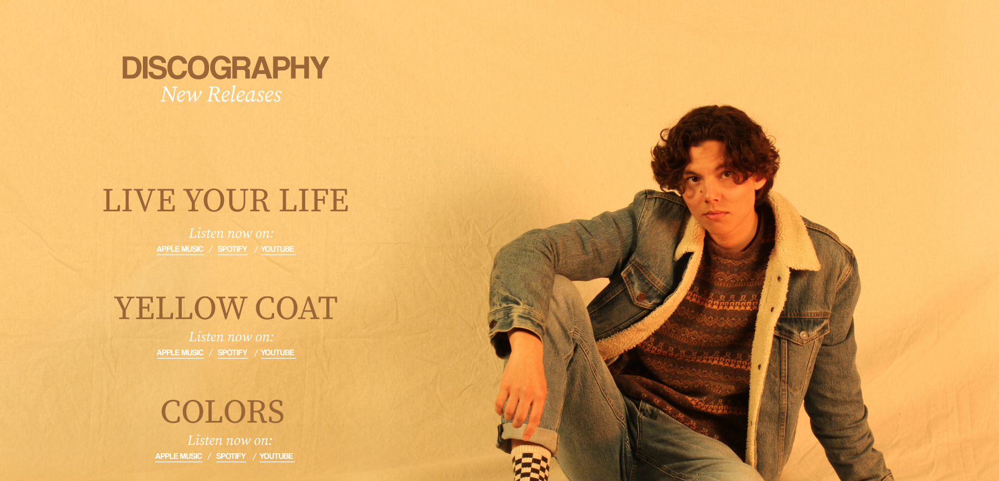
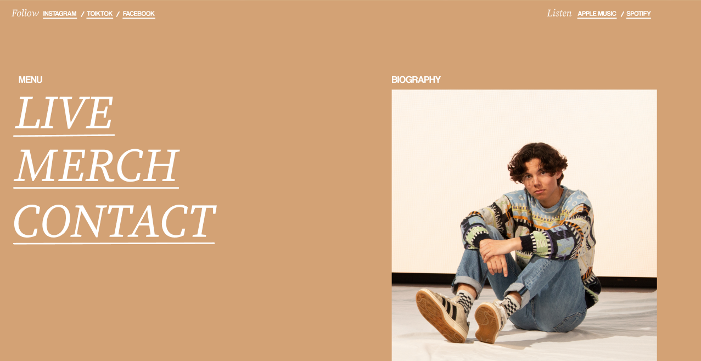

OWEN BRYCE

BEYOND EXPERIENCE
SCROLL TO EXPLORE
[SEC: 02_DETAILS]
OWEN BRYCE
Owen Bryce needed a complete brand identity built from the ground up. I led the visual design — shaping the brand, designing a poster series, art-directing and shooting the photography, and designing the website. The aim was a bold, cohesive identity that held together across both print and screen.
[ VISIT SITE ] arrow_outward
[YEAR]
2024
[ROLE]
Designer
[TOOLS]
Figma
Photography
[ GALLERY_VIEW ]

[IMG_01] / BRAND IDENTITY

[IMG_02] / POSTER & PHOTOGRAPHY
[IMG_03] / WEBSITE DESIGN
[ NEXT PROJECT ]